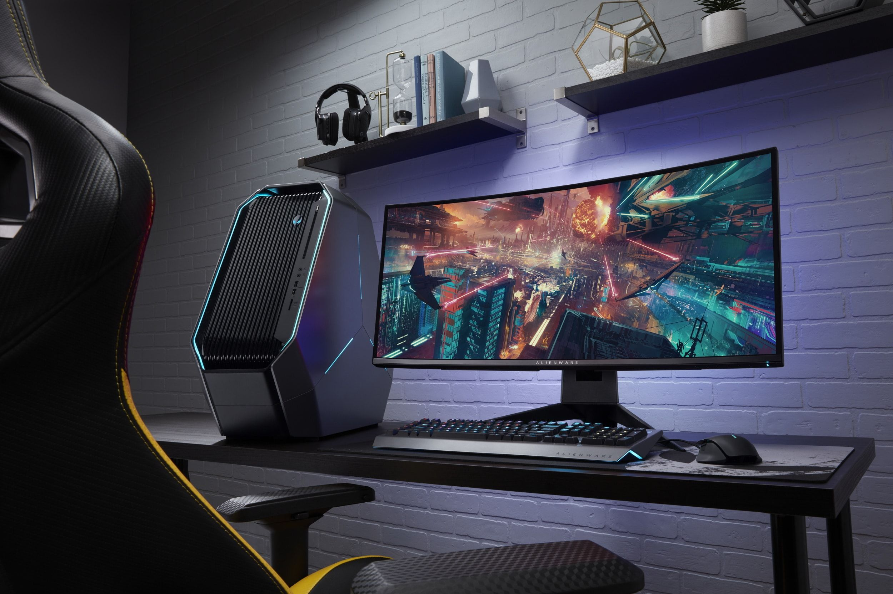

Нулевой этап в разработке компьютера продлился достаточно длительное время, ведь история развития компьютеров была скачкообразной. Изобретение Паскаля получило свое совершенствование в 1671 году. Немецкий математик Густав Лейбниц изобрел на основе зубчатого колеса арифмометр, который "умел" выполнять не два, а четыре действия. После этого скачка в развитии компьютера наступило полуторавековое затишье, предшествующее грандиозному прорыву в развитии.
Эпоху достаточно примитивных компьютеров прерывают первые ЭВМ, создание которых началось с 30-х годов на основе электронных ламп и реле. Это были громоздкие, неудобные в использовании, но прогрессивные для своего времени, компьютеры. Цена такого изобретения кусалась, поэтому позволить себе приобрести такую "штуку" могли только крупные корпорации и правительства некоторых стран.
[ Программы ] [ Словарь ] [ Комплектующие ] [Анкета